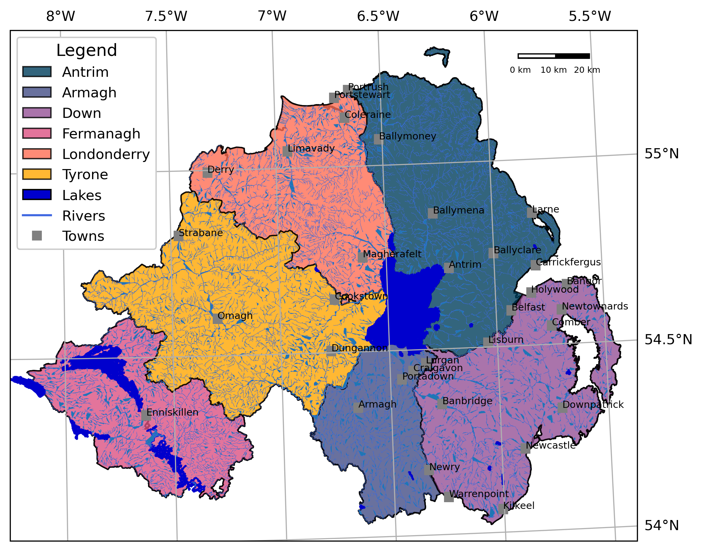

EGM722: A how-to Guide#
Introduction#
EGM722 is a module that is designed to introduce students to programming through the python programming language,
using a variety of software tools. Interactive programming exercises are provided in the form of jupyter notebooks,
and are intended to introduce students to geospatial packages such as cartopy, geopandas, and rasterio,
among others. Additional exercises guide users through fundamental git skills such as adding/committing changes to
files, creating and merging branches, and resolving conflicts.
Setup and installation#
Getting started#
To get started with the exercises, at a minimum, you will need to make sure that both git and conda are
installed on your computer. If you do not already have git installed, you can download the installer for your
operating system from the official download site.
To install conda, there are a few options:
Anaconda Navigator: If you are most comfortable with a graphical interface, you can download Anaconda Navigator from: https://www.anaconda.com/download/success
miniforge: If you are comfortable with (or wanting to learn) a command line interface, you can download miniforge, a more lightweight conda provider, from: https://conda-forge.org/download/
Optional steps#
GitHub: While it is not strictly necessary to open a GitHub account to be able to work through the programming exercises, it is recommended, so that you are able to create a fork of this repository to complete the exercises intended to familiarize you with version control using git and GitHub. You can sign up for a free account at github.
PyCharm/VSCode: I also highly recommend that you use an integrated development environment (IDE) to help you with writing your code. Again, this is not strictly necessary to work through the jupyter exercises, but some exercises require the use of some sort of IDE. For python, PyCharm and VSCode are two of the most popular (freely available!) choices, and there is a wealth of tutorials available for getting set up with them.
Download links:
PyCharm Community Edition: https://www.jetbrains.com/pycharm/download/ (be sure to scroll down to the Community Edition link!)
VSCode: https://visualstudio.microsoft.com/downloads/ (be sure to choose Visual Studio Code, not Visual Studio!)
Download/clone the egm722 repository#
The EGM722 repository is hosted at: iamdonovan/egm722
If you have created a GitHub account, you should first fork the repository to your own account. Once you have done this, you can clone your fork using the following command:
git clone https://github.com/{your_username}/egm722.git
making sure to replace {your_username} with your actual GitHub username!
If you do not have a GitHub account, you can still clone the EGM722 repository using the following command:
git clone https://github.com/iamdonovan/egm722.git
Setting up the conda environment#
Once you have successfully cloned the repository, you can then create a conda environment to work through the exercises.
To do this, use the environment.yml file provided in the repository. If you have Anaconda Navigator installed, you can do this by selecting Import from the bottom of the Environments panel.
Otherwise, from a command prompt or terminal, run the following command from the directory where you cloned the EGM722 repository:
conda env create -f environment.yml
The contents of environment.yml are as follows:
name: egm722
channels:
- conda-forge
- defaults
dependencies:
- python
- geopandas
- cartopy>=0.21
- jupyterlab
- ipywidgets
- rasterio
- pyepsg
- folium
And the packages that EGM722 requires are:
geopandas: for working with spatial vector data (https://geopandas.org/en/stable/)cartopy, version 0.21 or greater: for creating maps (https://scitools.org.uk/cartopy/docs/latest/)jupyterlab: for running the interactive notebook exercises (https://jupyter.org/)ipywidgets: for interactive plotting in jupyter notebooks (https://ipywidgets.readthedocs.io/en/stable/)rasterio: for working with raster data (https://rasterio.readthedocs.io/en/stable/)pyepsg: for access to EPSG codes (https://pyepsg.readthedocs.io/en/latest/)folium: for creating interactive HTML maps (https://python-visualization.github.io/folium/latest/)rasterstats: for computing zonal statistics (https://pythonhosted.org/rasterstats/)earthaccess: for accessing NASA Earth science datasets (https://earthaccess.readthedocs.io/en/latest/)
The final two dependencies, rasterstats and earthaccess, are not included in the environments.yml file, to
give students practice installing packages using both Anaconda Navigator or the conda command-line interface.
Additional setup steps#
Once you have cloned the repository and created the conda environment, you should be able to launch jupyter-lab
and get started on the first exercise. For full instructions for each exercise, be sure to visit the
class website.
There are some additional recommended setup steps that may make life easier, enabling you to configure jupyter and
your IDE of choice. For full setup steps, visit the complete setup guide available on the
class website.
Methods#
In general, the goal behind the exercises is to introduce various concepts of programming, python programming, or working with geospatial data, using examples and exercises that should be broadly familiar to students based on their background in GIS and/or remote sensing. In particular, this module makes use of open-source software packages in order to broaden students’ exposure to different methods of geospatial analysis. One additional benefit is that students will continue to have access to the software even after finishing their course, allowing them to continue developing their programming skills independent of the availability of software licenses and proprietary software (e.g., [Sotomayor2019]).
Programming is often an exercise that is most effectively taught through “learning by doing”, rather
than passive learning through lecturing (e.g., [Brown2018], [Wilson2019]). The exercises for this module are
structured as a blend of both theory and practical exercises, enabling students to immediately put theoretical topics
into practice. This approach is supported through the use of jupyter notebooks [Kluyver2016], which allow for the
combination of explanatory text and images with executable code.
To fit within the School of Geography and Environmental Sciences structure, the module is designed as a six week, 15 credit module (meaning ~150 hours of student effort). To allow students additional time to work on the assessment for the module, a self-directed programming project intended to use many of the skills and concepts introduced in the module, only five of these weeks have directed exercises.
To provide students additional practice with using git and related tools, the exercises for each week are saved
on different branches within the module repository. This means that before getting started on the jupyter
exercises, students practice merging different branches in the following ways:
Week 2: using GitHub Desktop (optionally), while also introducing the idea of synchronizing different versions of the repository.
Week 3: using the
gitcommand-line interface;Week 4: using a GitHub pull request.
Week 5: using any of the methods introduced previously.
The following sections detail the weekly exercises and the concepts introduced.
Week 1#
The exercises for Week 1 are:
A
jupyternotebook exercise, PythonIntro.ipynb, intended to introduce most of the basics of working withpython, including objects and variables, numeric operations, string (text) objects, lists and other sequences, functions, flow control, andimportstatements.A debugging exercise, intended to introduce students to using the debugging tools provided by an integrated development environment (IDE), to be able to identify and fix different types of commonly-encountered errors. These include runtime errors, which occur while the program is running and typically cause the program to stop running; it also introduces the idea of a semantic error, which doesn’t cause the program to stop but still causes the program to behave in unintended or unexpected ways. Students also use
gitfor version control while solving the different errors in the exercise, to provide additional exposure to these programming workflows.
Week 2#
The exercises for Week 2 are:
A
jupyternotebook exercise, Cartopy.ipynb, intended to introduce students togeopandas,cartopy, andmatplotlib, for working with geospatial vector data, mapping, and plotting data, respectively. Additionally, students are further introduced to docstrings (for documenting functions and other objects), transforming data to different coordinate reference systems, and using boolean statements to select different rows fromgeopandasobjects.An exercise in resolving file conflicts using
git. This example uses a recipe file that has been changed on multiple branches, and students are shown how to identify and resolve conflicts between files. This is done using a recipe example, rather than code, to help illustrate the concepts in a more easy to understand format.
Week 3#
The exercises for Week 3 are:
A
jupyternotebook exercise, VectorData.ipynb, which further introduces examples of working with vector data usingshapelyandgeopandas. In particular, students learn more about reprojecting vector data between coordinate reference systems, as well as different clipping and spatial join operations. They also learn about vectorized operations, which enable more efficient computation than using various types of loops.A
jupyternotebook exercise, Folium.ipynb, which introduces creating interactive maps (as opposed to static maps) usingfolium. Building on the spatial join operations introduced in the previous exercise, students also see how to use attribute data to join together different DataFrame-like objects.
At this point, students are also encouraged to think about ideas for their programming project and to reach out to the instructor to discuss these ideas and receive feedback or help (if needed). This ensures that students begin thinking about the assessment well before the due date.
Week 4#
The exercises for Week 4 are:
A
jupyternotebook exercise, Raster.ipynb, which introduces students to working with raster datasets usingrasterio. This includes the basics of working with different bands and affine transformations, but also introduces thewithconstruct, which allows us to tidily open files for reading (or writing) without needing to remember to close the file once we are finished. This exercise continues developing concepts used for writing functions, including the concepts of positional and keyword arguments, as well as unpacking operators such as*and**.A
jupyternotebook exercise, EarthAccess.ipynb, which introduces students to using theearthaccessAPI to search and download datasets from NASA EarthData. Before running the exercise, students are introduced to the .netrc file and shown how to set this up, to avoid storing usernames and passwords in scripts or notebook files. This exercise also introduces spatial concepts such as the unary union of vector objects, minimum bounding geometries, and constructs such as list comprehension to efficiently iterate and create lists in python.
Week 5#
The exercises for Week 5 are:
A
jupyternotebook exercise, ZonalStats.ipynb, which shows how to use therasterstatspackage to calculate zonal statistics using both vector and raster datasets. Students are also introduced to additional python concepts including thezip()built-in function andtry ... exceptblocks for handling errors in code.A
jupyternotebook exercise, GeoPandas.ipynb, which provides additional practice with usinggeopandasandpandasfor data analysis. This includes string and grouping operations, joining/merging dataframes, iterating over dataframes, and using some of the built-in plotting tools.
Expected Results#
By the end of the module, students will have an introduction to python programming for working with GIS
and remote sensing datasets in a number of different contexts. They will be able to start a new programming project
and understand how to use git to keep files and progress organized. While the short nature of the module means that
students are most likely still new to programming, they should have enough of a foundation to be able to continue
developing their skills and incorporating programming into their studies and work moving forward.
After working through each set of exercises, students should have an understanding of the following concepts, or be able to do the following things, organized by week:
Week 1#
The basics of the python language, including:
objects and variables,
basic numeric operations,
indexing (both strings and other sequences),
using and defining functions,
basic flow control, including
if/elif/elseblocks and loops;importstatements,file paths,
different error types and how to address them using debugging tools.
The basics of git:
the steps of using
gitto keep track of changes to files (such as scripts/code), including staging files and writing commit messageshow to create, merge, and prune branches
Week 2#
Use geopandas, cartopy, and matplotlib, including:
loading vector data
using boolean statements to index rows from a GeoDataFrame to select subsets of data
writing docstrings to document functions
displaying different spatial data types such as polygons, lines, and points
In particular, students will be introduced to the concepts needed to create a map like the following:
{kind=link}
Students will also be able to understand what is meant by “conflict” in the context of using git, and be able to
identify and resolve conflicts, and to merge branches using programs such as GitHub Desktop.
Week 3#
Use geopandas, shapely, and folium, including:
reprojecting datasets to the same coordinate reference system
clipping vector objects to different extents
using vectorized operations for efficient computation
summarizing data using pandas grouping operations
display vector datasets in an interactive map
Students will also see how to use the git command-line interface to fetch and merge branches, and gain experience installing additional packages into an existing environment using Anaconda Navigator.
At this point, students should be able to use what they have learned, along with some additional hints, to produce a map like the following example, which shows the electoral wards of Northern Ireland colored by the resident population of the ward:

Week 4#
Use rasterio, matplotlib and cartopy
loading and reading raster files
display and stretch raster images, including single-band and three-band images, using
write functions that use positional and keyword arguments, including default values
using unpacking operators such as
*and**
Use geopandas, earthaccess, and rasterio, including:
creating a search area from a vector dataset
identifying datasets
searching for and downloading files
mosaicking rasters into a single file
Students will also be familiar with creating pull requests on GitHub, in order to merge branches together, and see
how to use the conda command-line interface to install new packages into an existing environment.
Week 5#
Use rasterstats, geopandas, and pandas, including:
computing zonal statistics using both vector and raster datasets
rasterize polygon data
handle exceptions in code using
try ... exceptblocksconvert polygon data to points, to better facilitate spatial joins in some cases
merge dataframes using different attributes and methods
compute summary statistics for different attributes of a data table
compare ways of iterating over the rows of data tables
Troubleshooting: where to go to get help#
As you work through the exercises, you may encounter different errors using both git and python. A number of
the most common of these are detailed on the module FAQ page, though this list is by no means
exhaustive.
If you encounter any issues that you do not understand or aren’t able to work through, you can still report the issue to find help. When reporting your issues, please ensure that you are as specific as possible, and include the following information:
full error messages/traceback, either in the form of copied/pasted text or screenshots;
the type of computer and operating system you have.
If the issue is related to running python code (including jupyter notebooks), it might also help to include
information about your conda settings. To do this, run the following command:
conda info
This will print out information about different settings, and might help point to how to fix an issue.
You might also need to provide information about what packages are installed in your conda environment. The easiest
way to do this is to run the following command from within your conda environment:
conda list > environment_dump.txt
This will create a text file, environment_dump.txt, with a list of all of the different packages (and their versions) installed in your environment. Attach this file to your message reporting your issue.
You can report your issue in the following ways/places:
Blackboard discussion forum: Post your issue in the relevant discussion forum on the module Blackboard page.
Weekly Office Hours drop-in sessions: check the Blackboard calendar for full details. This is often a helpful way to get small issues resolved quickly, as it avoids the asynchronous back and forth that can happen on the discussion forums.
GitHub issues: if you have a GitHub account, you can report your problem by opening an issue on the EGM722 GitHub repository: iamdonovan/egm722#issues
References#
- Brown2018
Brown, N.C.C. and Wilson, G. (2018). Ten quick tips for teaching programming, PLOS Computational Biology, 14(4), p. e1006023. doi:10.1371/journal.pcbi.1006023.
- Kluyver2016
Kluyver, T. et al. (2016) Jupyter Notebooks – a publishing format for reproducible computational workflows, in Loizides, F. and Scmidt, B. (eds). 20th International Conference on Electronic Publishing (01/01/16), IOS Press, pp. 87–90. doi:10.3233/978-1-61499-649-1-87.
- Sotomayor2019
Sotomayor-Beltran, C. (2019) First year undergraduate electronic engineering students from a Peruvian university learn to program with Python, in 2019 IEEE World Conference on Engineering Education (EDUNINE). 2019 IEEE World Conference on Engineering Education (EDUNINE), Lima, Peru: IEEE, pp. 1–4. doi:10.1109/EDUNINE.2019.8875825.
- Wilson2019
Wilson, G. (2019) Ten quick tips for delivering programming lessons. PLOS Computational Biology, 15(10), p. e1007433. doi:10.1371/journal.pcbi.1007433.